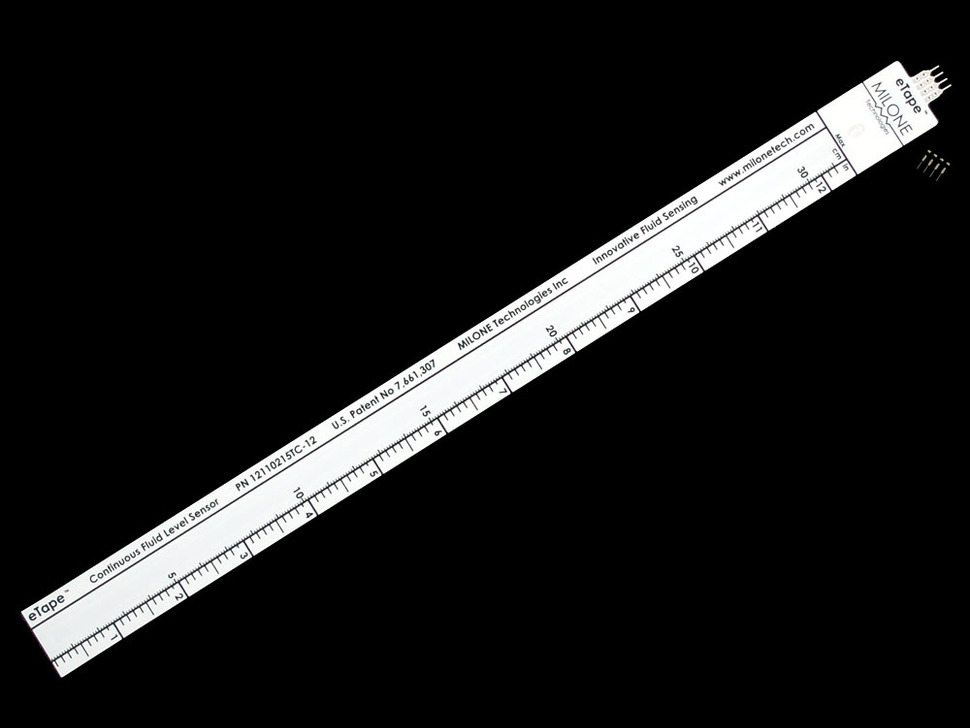
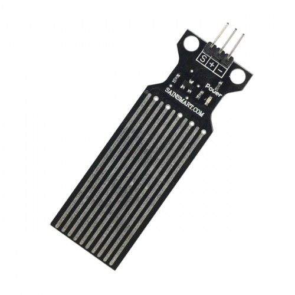

The eTape Liquid Level Sensor is a solid-state sensor with a resistive output that varies with the level of the fluid. It does away with clunky mechanical floats, and easily interfaces with electronic control systems. The eTape sensor’s envelope is compressed by the hydrostatic pressure of the fluid in which it is immersed. This results in a change in resistance that corresponds to the distance from the top of the sensor to the surface of the fluid. The sensor’s resistive output is inversely proportional to the height of the liquid: the lower the liquid level, the higher the output resistance; the higher the liquid level, the lower the output resistance.
This is a very unique sensor, we haven’t seen anything else that is affordable and accurate for measuring liquid level. This sensor seems like it would be a handy addition to an hydroponics, aquarium, fountain or pool controller, or perhaps measuring a rain tube.
Water sensor brick is designed for water detection, which can be widely used in sensing the rainfall, water level, even the liquate leakage. The brick is mainly comprised of three parts: An Electronic brick connector, a 1 MΩ resistor, and several lines of bare conducting wires.
